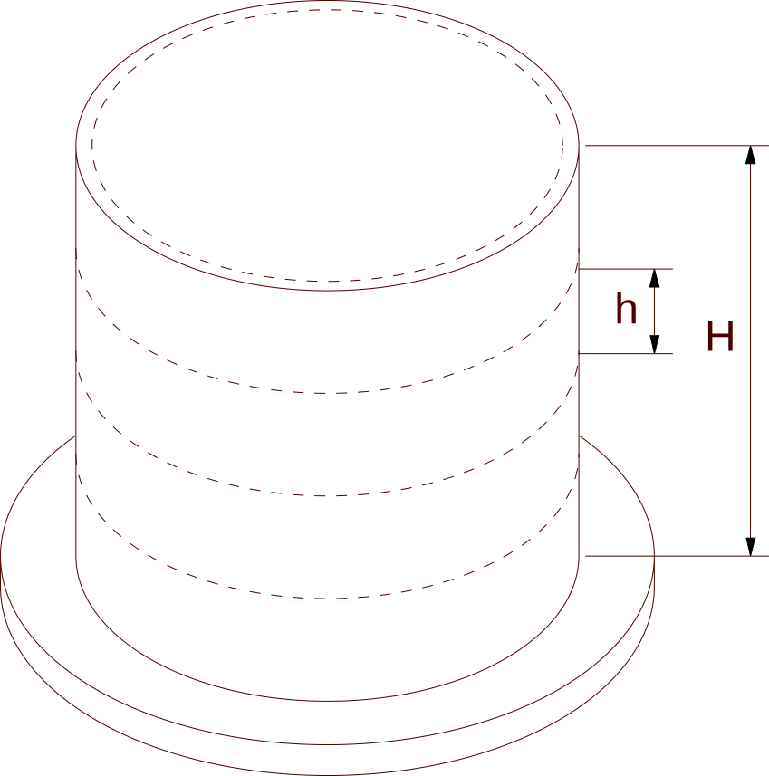

Welcome
Create documents with working, well-documented calculations!
This is a live text editor. You can click anywhere and start typing. The calculation cells are also live. You can click on one and edit it. They will all update if you close a calculation cell with Enter.
Calculations
To create a calculation cell, select a spot and type Alt+C or hit the button. Write your calculation into the cell and write a “?” sign where the result should appear. Hit the Enter key and a completed calculation will appear, like these:
You can assign a result to a variable:
… and then use the variable in a calculation:
Rounding Results
You can define how numeric results are rounded. The next line specifies that subsequent decimal fractions will be rounded so that no more than 3 significant digits appear.
Unit-Aware Calculations
Physical units can be part of your calculations. Hurmet will automatically convert the units.
Write a number and a unit name together with no space, as in 20meters or write a unit name between single quotes, as in 4 'nautical miles', and write a ?? where you want the result of a unit-aware calc.
Hurmet also does a unit-compatibility check.
Vectors
Calculations can be done on vectors. Say that we want to build a cylindrical water tank in 5-foot courses.
, tank diameter |
, course height |
, tank height |
, water density |
We’ll calculate values for each course, all at once, using vectors. Each vector element represents one course.
The next line creates a vector. The syntax is [start:step:end].
, water depth at the bottom of each course
, lateral hydrostatic pressure
, hoop tension in each course
Vectors can replace many spreadsheet calculations. Then all of the expressions and values are open to view. That extra information helps you to avoid the errors that creep into spreadsheets.
Spreadsheets
Sometimes vectors are just too awkward. For those times, Hurmet can include simple spreadsheets.
Vertical Distribution of Seismic Force
From earlier analysis
, base shear , fundamental period of the structure
From ASCE-16 section 12.8.3, Equivalent Lateral Procedure
, vertical distribution coefficient, Eq. 12.8-12
, local design force, Eq. 12.8-11
|
Floor |
Weight |
Height |
w × hk |
Cvs |
Force |
Shear |
Overturning |
|---|---|---|---|---|---|---|---|
|
roof
|
950
|
70
|
113,100
|
0.2899
|
116.0
|
116.0
|
0
|
|
fifth
|
1,250
|
56
|
115,800
|
0.2968
|
118.7
|
234.7
|
1,624
|
|
fourth
|
1,250
|
42
|
83,770
|
0.2147
|
85.90
|
320.6
|
4,910
|
|
third
|
1,250
|
28
|
53,080
|
0.1361
|
54.44
|
375.0
|
9,398
|
|
second
|
1,250
|
14
|
24,340
|
0.06240
|
24.96
|
400.0
|
14,650
|
|
total
|
5,950
|
0
|
390,100
|
400.0
|
400.0
|
20,250
|
To edit a spreadsheet, select some part of the sheet and tap the button. In Hurmet spreadsheets, you toggle the entire sheet, not just one cell.
Data Frames
Data can be stored in a tabular format:
Later, you can access the data:
Remote Data
Such data can be stored in a remote file. Say that we want to engineer a steel end-plate connection. The calculation could begin by fetching a chunk of data about steel shapes and loading that data into a variable, like this:
From that, we can load data into variables for individual dimensions.
Beam properties:
Column properties:
Now we can use those variables to do calculations. For an actual steel connection of this sort, a calculation would typically run to about three pages. We’ll do just a few lines.
Steel properties |
Factored reactions at end of beam (from analysis results) |
|---|---|
, yield strength |
, shear |
, modulus of elasticity |
, bending moment |
Check panel zone
, panel zone shear demand
, axial load demand in column from structural analysis
Draw a box around your conclusion. It will draw attention.
Rational Numbers
Hurmet numbers are rational numbers of arbitrary precision. Unlike most programming languages, Hurmet will do the following comparison correctly:
Hurmet can handle bigger numbers than many languages:
Matrix Inversion
Hurmet can solve a system of linear equations via matrix inversion.
The system: when restated in matrix format is:
We can invert the first matrix and multiply it times both sides. That solves for each variable.
Reviews
Reviewers can write comments that are visibly different than the document.
You can save a document snapshot and later display the difference between the snapshot and the current document.
Annotations
A section can be given an annotation, like this tip. The available annotations are “Note”, “Tip”, “Important”, and “Warning”.
User-Defined Functions
You can write your own Hurmet functions. The one below implements an infinite series developed by Francois Viète in 1597, to estimate the value of π. He derived this series:
Here’s the function:
… and now we’ll call the function and tell it to calculate the first ten terms of the series:
, good to 6 significant digits. Not bad for ten terms.
Drawings
Hurmet’s draw environment enables function plotting. For instance, to get a sine wave, one can write the following code into a math zone:
|